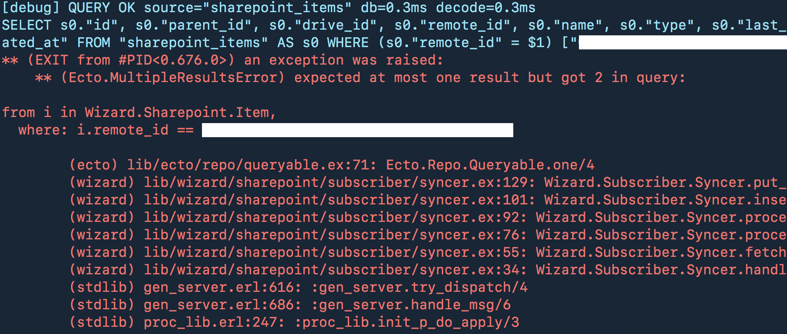

A quick tip to help remember where you left off
⭐️ a blog post
If your short-term memory isn’t the best, like me, then you probably have a few tricks to help recall information easier. When I’m programming, working on a spreadsheet, or anything on a computer and I need to leave it in an unfinished state: I will take a screenshot. macOS now supports syncing your Desktop to all your devices, so that screenshot ends up everywhere automatically.

This morning I noticed a screenshot waiting for me of some code exception. I assume I wanted myself to fix this first-thing today. After making coffee, of course. Taking a screenshot, making a note in a notes app, or emailing yourself can really help reconnect you to what you were thinking.
🏁